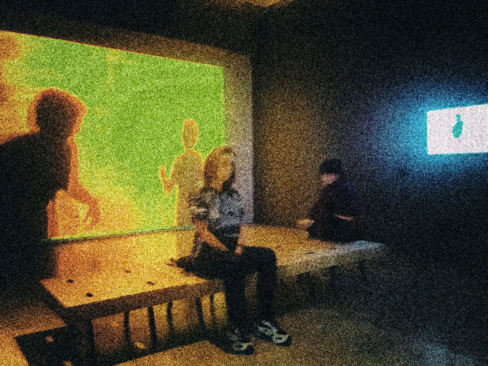
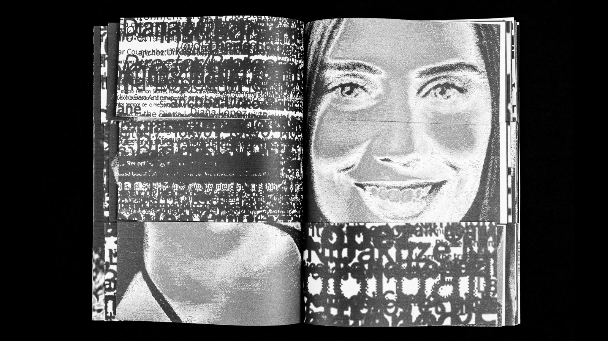
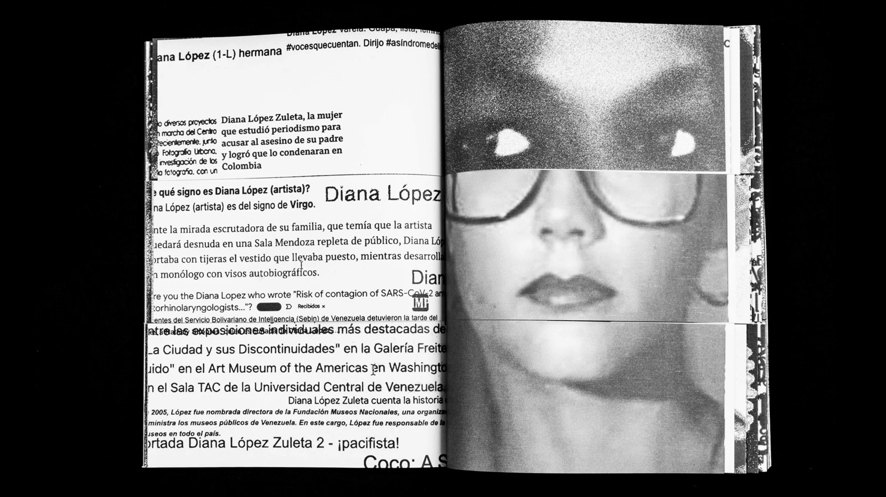
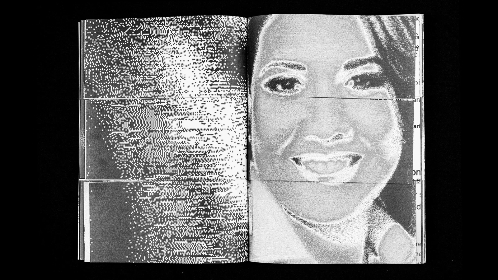

2dianas
A performance with Colombian journalist Diana López Zuleta at Galería Carmen Araujo. A shared name opens a live encounter shaped by speech, silence, gesture and a metronome.

Parallel Vision / Visual Art
Diana López · Caracas, 2024 · Photograph: Claudio Valdebenito / Courtesy Studio Diana López
The Artist / 01
Diana López is a Venezuelan visual artist whose practice brings photography, video, performance and installation into conversation with the lives and images of others.
Participation has been central to her work since the 1990s. A shared name, a borrowed camera or a gesture can become the starting point for an encounter, questioning how identities take shape and how images move between people, places and media.
Born in 1968, López received the Eugenio Mendoza Art Prize in 1994 and participated in the MoMA PS1 International Studio Program in New York in 1996. Her work moves between the body and its image, individual experience and collective memory.
Selected Work / 02
Autos, Captures & Scrolls / 2023–2024
A name becomes an expanding archive. Through searches across online platforms, López encounters women who share her name. Portraits, fragments of text and repeated faces question what an image can reveal about a person, and what disappears through repetition.



Moving Image / 03
Video / 15 min / Caracas, 2000
From the archive
An earlier video work within López’s ongoing exploration of performance and the image.
Across the Practice / 04
A performance with Colombian journalist Diana López Zuleta at Galería Carmen Araujo. A shared name opens a live encounter shaped by speech, silence, gesture and a metronome.
At Eglise, a former church, vertical screens, suspended printed fabrics, light and spatial sound turn the repeated name into an installation that unfolds across the space.
Continue Exploring / 05